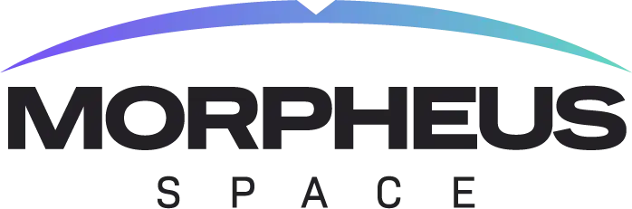

About Me
I am a third-year computer science student at the University of Southern California, Viterbi School of Engineering. I am also a Software Engineer at Outlier, specializing in AI Training. This semester (Spring 2024) I am a course producer for CS 170, a first-year computer science class at USC.
This website - built using HTML, JavaScript and CSS - is intended to serve as a brief virtual resume. I have included a link to my most recent programming projects at the top of this site, as well as a link to my formal resume and contact information.Programming Experience


Association for Computing Machinery
General Member, USC Chapter
Undergraduate Coursework
- Data Stuctures and Object-Oriented Design
- Principles of Software Development
- Algorithms and Theory of Computing
- Statistics and Data Science with R
- Accelerated Programming in Python
Association for Computing Machinery
General Member, USC Chapter
Undergraduate Coursework
- Data Stuctures and Object-Oriented Design
- Principles of Software Development
- Algorithms and Theory of Computing
- Statistics and Data Science with R
- Accelerated Programming in Python
TAMID Group, Vice President and Director of Education
I teach weekly programing lectures covering basic Python data structures and syntax. I also provide lectures on SQL fundamentals and software development tools such as Git and other version control.

Professional Experience
Software Engineer - AI Training, Outlier
I work on tackling intricate coding challenges within the Remotasks platform, leveraging my expertise in programming languages such as C++, Python, Java, and others. My responsibilities encompass crafting solutions to these programming challenges, which play a crucial role in training AI language models. Additionally, I take charge of creating thorough test cases and providing in-depth explanations for a diverse range of programming problems. These efforts are essential in assessing and ensuring the quality of AI-generated responses to programming prompts.
I work on tackling intricate coding challenges within the Remotasks platform, leveraging my expertise in programming languages such as C++, Python, Java, and others. My responsibilities encompass crafting solutions to these programming challenges, which play a crucial role in training AI language models. Additionally, I take charge of creating thorough test cases and providing in-depth explanations for a diverse range of programming problems. These efforts are essential in assessing and ensuring the quality of AI-generated responses to programming prompts.
Course Producer, CS 170
As a course producer for USC's first-year computer science class, I aid in the development and grading of homework assignments and lecture material, assisting in the curation of a robust and comprehensive curriculum for a class of over 250 students. I also conduct mentoring sessions where I actively assist students in topics such as Big-O Notation, Recursion, Sorting Algorithms, Graph Theory and Searching Algorithms.
